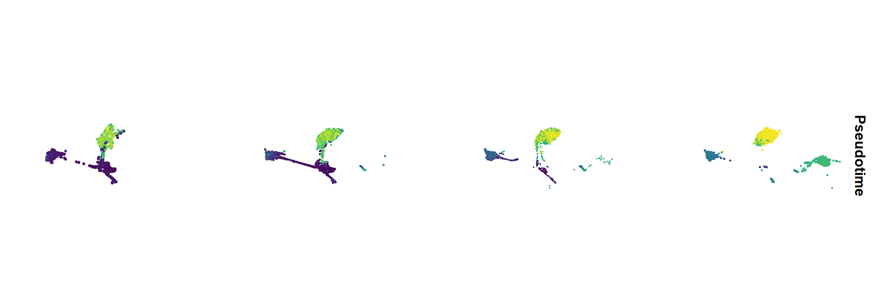
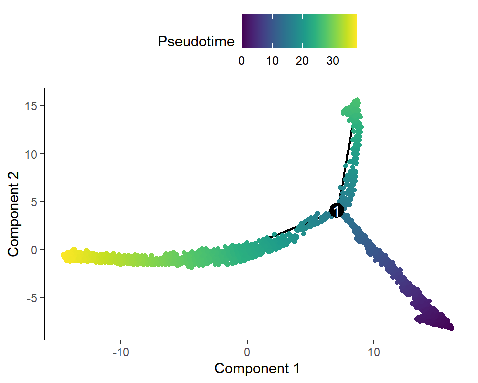
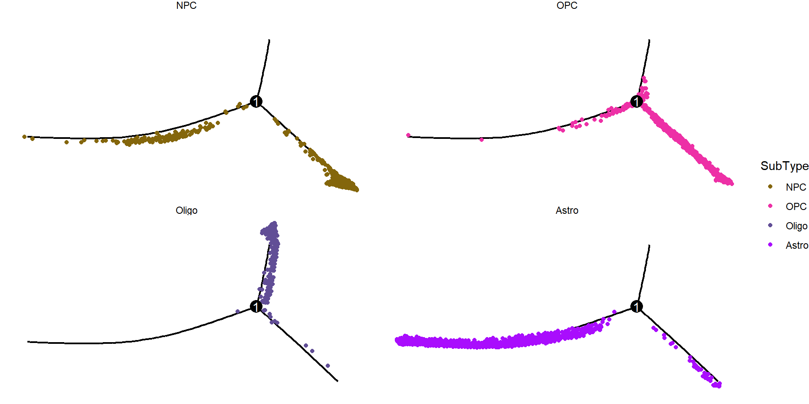
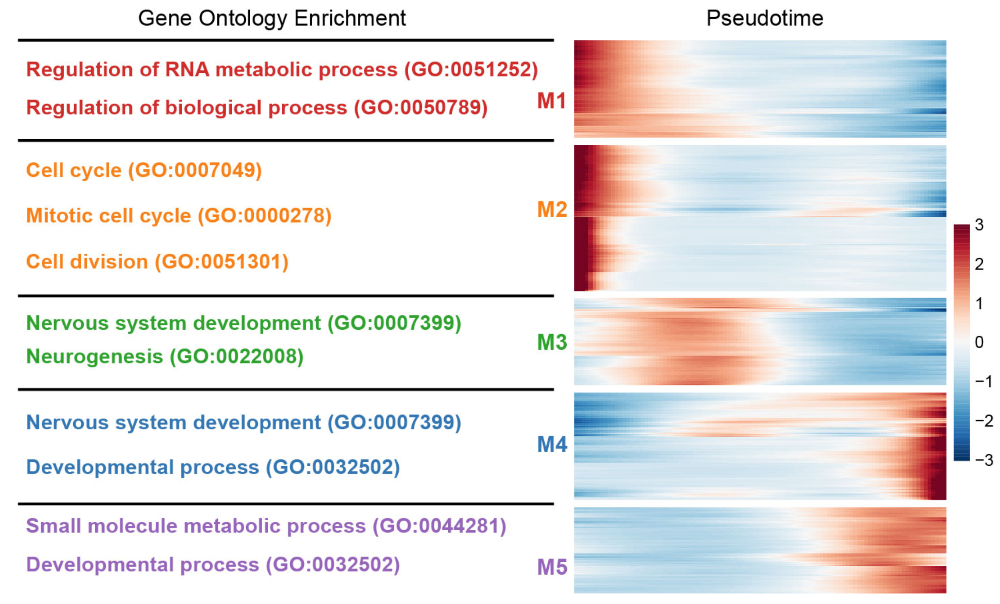
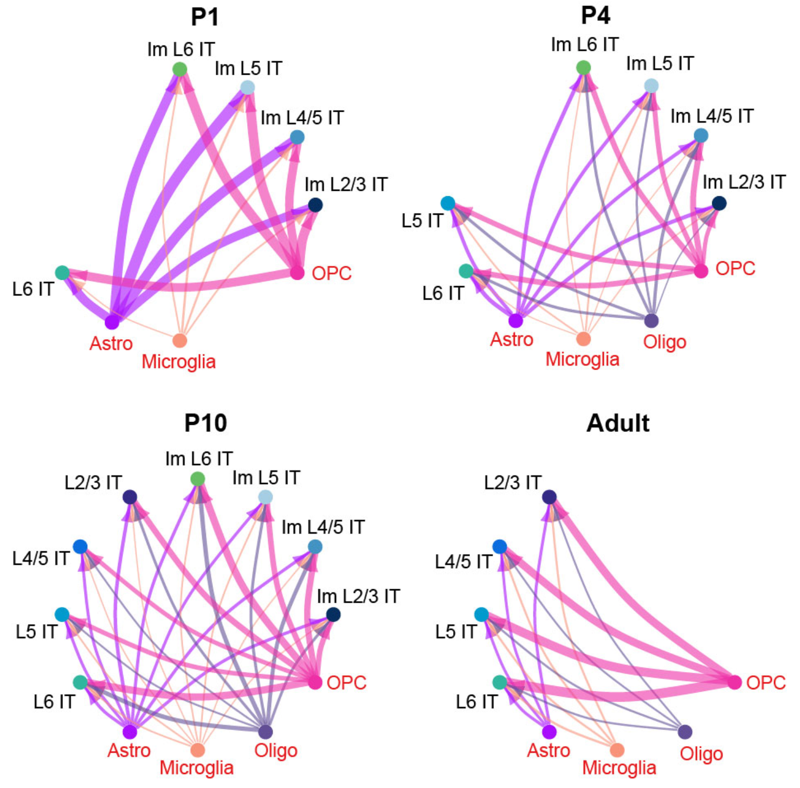
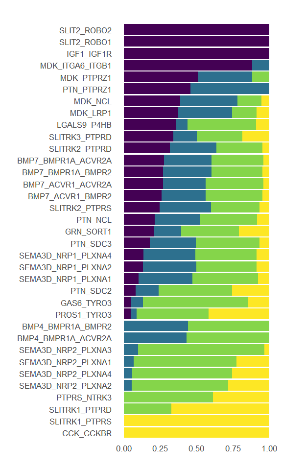
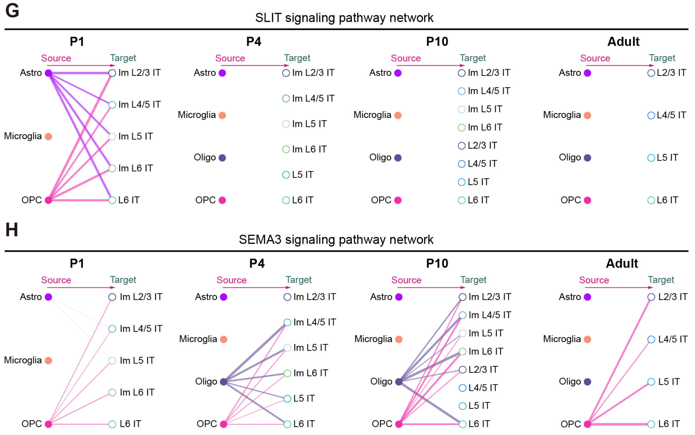
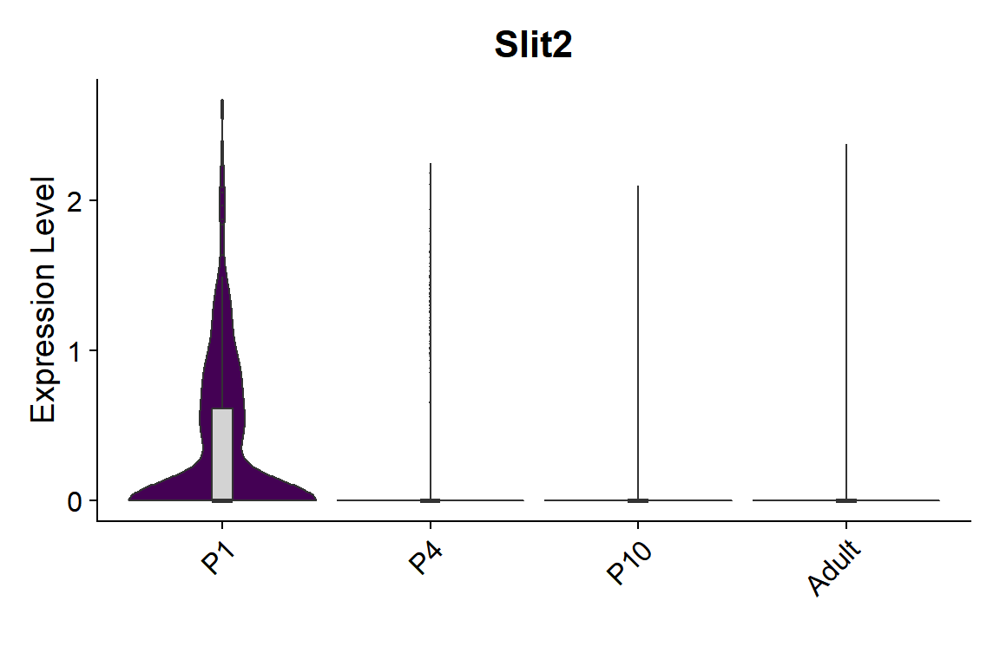
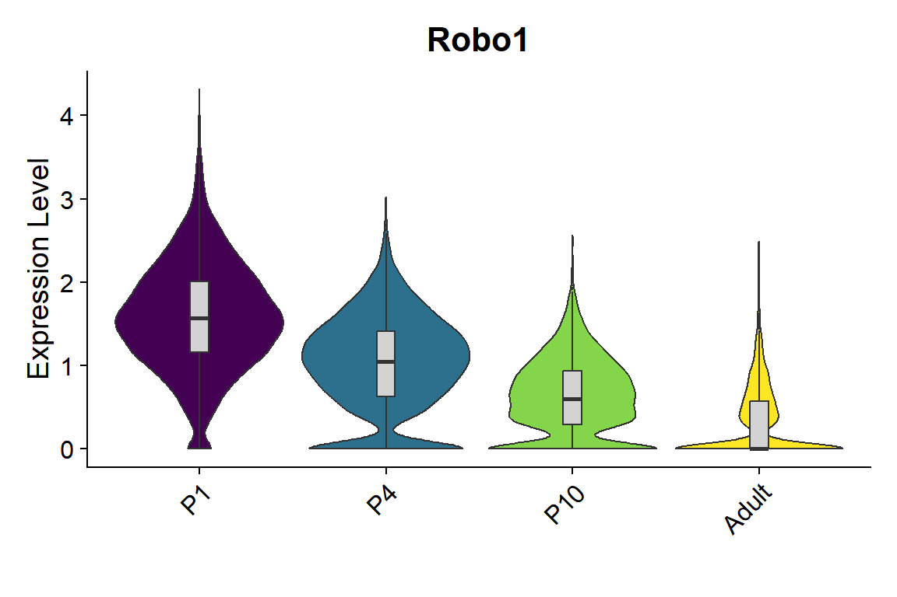

Code
library(Seurat)
library(tidyverse)
library(monocle)
library(CellChat)
library(scCustomize)
source('bin/Palettes.R')library(Seurat)
library(tidyverse)
library(monocle)
library(CellChat)
library(scCustomize)
source('bin/Palettes.R')seu.harmony <- readRDS('../data/seu.harmony.rds')
seu.harmony.metadata <- readRDS('../data/seu.harmony.metadata.rds')
seu.harmony@meta.data <- seu.harmony.metadata
seu.NOneuron <- subset(seu.harmony, cells=colnames(seu.harmony)[which(
seu.harmony$SubType %in% c("NPC", "Astro", "OPC", "Oligo") &
seu.harmony@reductions$umap@cell.embeddings[,"UMAP_2"] > 5
)])
cds <- readRDS("../data/Figure5/cds.NOneuron.rds")P1.CellChat <- readRDS("../data/Figure5/P1.CellChat.rds")
P4.CellChat <- readRDS("../data/Figure5/P4.CellChat.rds")
P10.CellChat <- readRDS("../data/Figure5/P10.CellChat.rds")
Adult.CellChat <- readRDS("../data/Figure5/Adult.CellChat.rds")#P0.NeuronChat <- readRDS("../../data/rds/Figure5/P0.NeuronChat.rds")
#P4.NeuronChat <- readRDS("../../data/rds/Figure5/P4.NeuronChat.rds")
#P10.NeuronChat <- readRDS("../../data/rds/Figure5/P10.NeuronChat.rds")
#Adult.NeuronChat <- readRDS("../../data/rds/Figure5/Adult.NeuronChat.rds")
all.CellChat <- readRDS("../../data/rds/Figure5/all.CellChat.rds")seu <- seu.NOneuron
seu$Pseudotime <- cds$Pseudotime
seu$SubType <- factor(seu$SubType, levels = names(col_SubType))
seu$orig.ident <- factor(seu$orig.ident, levels = c("P1","P4","P10","Adult"))
Figure_5A <-
FeaturePlot(seu, features = "Pseudotime", split.by = 'orig.ident', ncol = 4) &
scale_color_gradientn(colours = sciRcolor::pal_scircolor(96)) &
theme(axis.line = element_blank(), axis.ticks = element_blank(),
axis.text = element_blank(), plot.title = element_text(size = 30)) &
labs(x='', y='', title = "") &
coord_fixed()
Figure_5A
ggsave("../../Figure/Figure5/Figure_5A.pdf", plot = Figure_5A,
height = 6, width = 18, units = "in")Figure_5B <-
plot_cell_trajectory(cds, color_by = "Pseudotime") +
scale_color_gradientn(colours = sciRcolor::pal_scircolor(96))
Figure_5B
ggsave("../../Figure/Figure5/Figure_5B.pdf", plot = Figure_5B,
height = 4, width = 5, units = "in")cds$SubType <- seu.NOneuron$SubType
cds$SubType <- factor(
cds$SubType,
levels = c("NPC", "OPC", "Oligo", "Astro"))
Figure_5C <-
plot_cell_trajectory(cds, color_by = "SubType") +
scale_color_manual(values = col_SubType) +
facet_wrap(~SubType, nrow=2) +
theme_void()
Figure_5C
ggsave("../../Figure/Figure5/Figure_5C.pdf", plot = Figure_5C,
height = 5, width = 10, units = "in")ordergene <- cds@featureData@data$gene_short_name[cds@featureData@data$use_for_ordering==TRUE]
Time_diff <- differentialGeneTest(cds[ordergene,], cores = 5,
fullModelFormulaStr = "~sm.ns(Pseudotime)")
Time_diff <- Time_diff[order(Time_diff$qval),]
sig_gene_names <- row.names(subset(Time_diff, qval < 1e-10))
Time_diff <- Time_diff[sig_gene_names,]
#write.csv(Time_diff,"../../data/supplemental_table/table6_Noneuron_pseudotime_gene.csv")
Figure_5D <- plot_pseudotime_heatmap(
cds[sig_gene_names[1:1000],],
num_clusters = 6,
cores = 4,
show_rownames = F,
hmcols = colorRampPalette(rev(sciRcolor::pal_scircolor(85)))(100),
return_heatmap = T)
clusters <- data.frame(cutree(Figure_4F$tree_row, k=6))
clusters[,1] <- as.character(clusters[,1])
colnames(clusters) <- "Gene_clusters"
#write.csv(clusters, "../../data/rds/Figure5/Time_cluster_all.csv")knitr::include_graphics("./images/Figure_5D.png", dpi = 300)
group <- c(rep("IT",8), rep("Non-Neuronal",4))
names(group) <- names(col_SubType)[c(1:8,17,19:21)]
Neuron <- names(group)[c(1:8)]
Non_neuron <- names(group)[c(9:12)]
color.use <- c(
"#062e60","#4393c3","#a6cee3","#66bd63",
"#342a85","#0a6ddd","#009acd","#31b69e",
"#a90dfd","#f89279","#614e96","#ed30a6")
P1_net <- as.data.frame(P1.CellChat@net$count)
P4_net <- as.data.frame(P4.CellChat@net$count)
P10_net <- as.data.frame(P10.CellChat@net$count)
Adult_net <- as.data.frame(Adult.CellChat@net$count)
edge.weight.max <- max(max(P1_net),max(P4_net),max(P10_net),max(Adult_net))
#pdf("../../Figure/Figure5/Figure_5D_P0.pdf", width = 6, height = 6)
#par(mfrow=c(1,1))
# P1
P1_net[,"L2/3 IT"] <- 0
P1_net[,"L4/5 IT"] <- 0
P1_net[,"L5 IT"] <- 0
P1_net[,"Oligo"] <- 0
P1_net["Oligo",] <- 0
netVisual_circle_neuron(
as.matrix(P1_net[Non_neuron,Neuron]),
color.use = color.use,
group=group[c(Neuron, Non_neuron)],
weight.scale = T,
edge.weight.max = 20,
vertex.label.cex = 2,
arrow.size = 1,
title.name = "P1")
#dev.off()
# P4
P4_net[,"L2/3 IT"] <- 0
P4_net[,"L4/5 IT"] <- 0
netVisual_circle_neuron(
as.matrix(P4_net[Non_neuron,Neuron]),
color.use = color.use,
group=group[c(Neuron, Non_neuron)],
weight.scale = T,
edge.weight.max = 20,
vertex.label.cex = 2,
arrow.size = 1,
title.name = "P4")
# P10
netVisual_circle_neuron(
as.matrix(P10_net[Non_neuron,Neuron]),
color.use = color.use,
group=group[c(Neuron, Non_neuron)],
weight.scale = T,
edge.weight.max = 20,
vertex.label.cex = 2,
arrow.size = 1,
title.name = "P10")
# Adult
Adult_net[,"Im L2/3 IT"] <- 0
Adult_net[,"Im L4/5 IT"] <- 0
Adult_net[,"Im L5 IT"] <- 0
Adult_net[,"Im L6 IT"] <- 0
Adult_net[,"NPC"] <- 0
Adult_net["NPC",] <- 0
netVisual_circle_neuron(
as.matrix(Adult_net[Non_neuron,Neuron]),
color.use = color.use,
group=group[c(Neuron, Non_neuron)],
weight.scale = T,
edge.weight.max = 20,
vertex.label.cex = 2,
arrow.size = 1,
title.name = "Adult")knitr::include_graphics("./images/Figure_5E.png", dpi = 300)
group <- c(rep("IT",8), rep("Non-Neuronal",4))
names(group) <- names(col_SubType)[c(1:8,17,19:21)]
Neuron <- names(group)[c(1:8)]
Non_neuron <- names(group)[c(9:12)]
#P1
df.P1 <- rankNet(P1.CellChat, slot.name = "net", measure = c("weight"),
sources.use = Non_neuron[-3], targets.use = Neuron[-c(5:7)],
mode='single', return.data = T)
df.P1 <- df.P1$signaling.contribution
df.P1$Time <- "P1"
P1.top10 <- as.character(df.P1$name[df.P1$contribution>0.1])
#df.P0 <- df.P0[df.P0$contribution > 0.5,]
#P4
df.P4 <- rankNet(P4.CellChat, slot.name = "net", measure = c("weight"),
sources.use = Non_neuron, targets.use = Neuron[-c(5:6)],
mode='single', return.data = T)
df.P4 <- df.P4$signaling.contribution
df.P4$Time <- "P4"
P4.top10 <- as.character(df.P4$name[df.P4$contribution>0.1])
#df.P4 <- df.P4[df.P4$contribution > 0.5,]
#P10
df.P10 <- rankNet(P10.CellChat, slot.name = "net", measure = c("weight"),
sources.use = Non_neuron, targets.use = Neuron,
mode='single', return.data = T)
df.P10 <- df.P10$signaling.contribution
df.P10$Time <- "P10"
P10.top10 <- as.character(df.P10$name[df.P10$contribution>0.1])
#df.P10 <- df.P10[df.P10$contribution > 0.5,]
#Adult
df.Adult <- rankNet(Adult.CellChat, slot.name = "net", measure = c("weight"),
sources.use = Non_neuron[-1], targets.use = Neuron[-c(1:4)],
mode='single', return.data = T)
df.Adult <- df.Adult$signaling.contribution
df.Adult$Time <- "Adult"
Adult.top10 <- as.character(df.Adult$name[df.Adult$contribution>0.1])
#df.Adult <- df.Adult[df.Adult$contribution > 0.5,]
#name <- unique(c(df.P0$name, df.P4$name, df.P10$name, df.Adult$name))
name <- unique(c(P1.top10, P4.top10, P10.top10, Adult.top10))
mat <- matrix(nrow = length(name), ncol = 4)
rownames(mat) <- name
colnames(mat) <- c("P1","P4","P10","Adult")
mat[,"P1"] <- df.P1$contribution[match(name, df.P1$name)]
mat[,"P4"] <- df.P4$contribution[match(name, df.P4$name)]
mat[,"P10"] <- df.P10$contribution[match(name, df.P10$name)]
mat[,"Adult"] <- df.Adult$contribution[match(name, df.Adult$name)]
mat[is.na(mat)] <- 0
mat <- mat/rowSums(mat)
df <- arrange(as.data.frame(mat), desc(P1), desc(P4), desc(P10), desc(Adult))
df$name <- rownames(df)
df_long <- pivot_longer(df, !name, names_to="Time", values_to="Value")
df_long$Time <- factor(df_long$Time, levels = rev(c("P1","P4","P10","Adult")))
df_long$name <- factor(df_long$name, levels = rev(df$name))
Figure_5F <-
ggplot(df_long, aes(x = name, y = Value, fill = Time)) +
geom_bar(stat = "identity", width = 0.9) +
scale_fill_manual(values = col_Time) +
labs(x='', y='', title='') +
theme_minimal(base_size = 8) +
theme(panel.grid = element_blank(), plot.title = element_text(hjust = 0.5),
legend.position = "none",
legend.title = element_blank()) +
coord_flip()
Figure_5F
ggsave("../../Figure/Figure5/Figure_5F.pdf", plot = Figure_5F,
height = 5.5, width = 3, units = "in")pdf("../../Figure/Figure5/Figure_5F/SEMA3D_NRP2_PLXNA3_Adult.pdf", width = 15, height = 8)
pathways.show <- c('SEMA3')
LR.show <- c('SEMA3D_NRP2_PLXNA3')
netVisual_individual(Adult.CellChat,
color.use = col_SubType[levels(Adult.CellChat@idents)],
signaling = pathways.show,
pairLR.use = LR.show,
#vertex.receiver = c(1,7,8),
#vertex.receiver = c(1,8,9,10),
#vertex.receiver = c(1,10,11,12),
vertex.receiver = c(1,6,7,8),
layout = 'hierarchy')
dev.off()knitr::include_graphics("./images/Figure_5GH.png", dpi = 300)
seu <- seu.NOneuron[,seu.NOneuron$SubType=="Astro"]
seu$orig.ident <- factor(seu$orig.ident, levels = c("P1","P4","P10","Adult"))
gene_list <- c("Slit2")
Figure_5I <-
VlnPlot_scCustom(seurat_object = seu, features = gene_list, group.by = "orig.ident",
pt.size = 0) & NoLegend() &
geom_boxplot(width=0.1, outlier.size=0, fill="lightgray") &
scale_fill_manual(values = col_Time) &
labs(x="")
Figure_5I
ggsave("../../Figure/Figure5/Figure_5H/Figure_5H_Sema3d.pdf", plot = Figure_5H,
height = 4, width = 4.5, units = "in")seu <- seu.harmony[,seu.harmony$SubType %in% names(col_SubType)[1:8]]
seu$orig.ident <- factor(seu$orig.ident, levels = c("P1","P4","P10","Adult"))
gene_list <- c("Robo1")
Figure_5I <-
VlnPlot_scCustom(seurat_object = seu, features = gene_list, group.by = "orig.ident",
pt.size = 0) & NoLegend() &
geom_boxplot(width=0.1, outlier.size=0, fill="lightgray") &
scale_fill_manual(values = col_Time) &
labs(x="")
Figure_5I
ggsave("../../Figure/Figure5/Figure_5H/Figure_5J_Robo1.pdf", plot = Figure_5H,
height = 4, width = 6, units = "in")